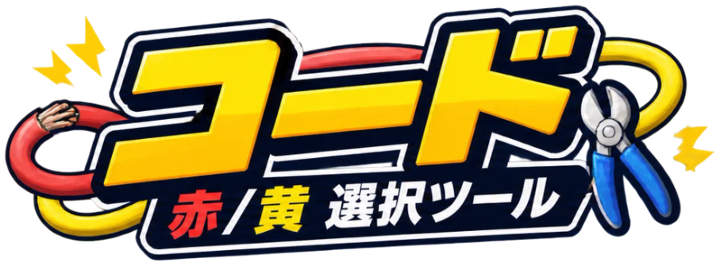

🎲 ゲーム一覧へ

ボムバスターズを実物で遊ぶとき、赤と黄色の数字を決めるツール
赤いコード
1.5 〜 11.5
黄色いコード
1.1 〜 11.1
えらぶ
ミッションカードに合わせて本数をえらび、
「えらぶ」を押してください。
使い方
・ミッションカードに書いてある本数を、赤と黄色それぞれでえらぶ（使わない色は「なし」）。
・「3本のうち2本」のような指定は、候補の3本を画面に出します。その3枚を
裏向きでまぜて2枚だけ
山に入れ、残りは見ないで箱にもどしてください（どれが入ったかは誰にも分からない）。
・ボードの目印は、画面に出た数字ぜんぶに置きます。
・カードにない組み合わせは、＋−で自由に決められます。
この画面だけで動きます（通信なし）。結果はこの端末にだけ残ります。